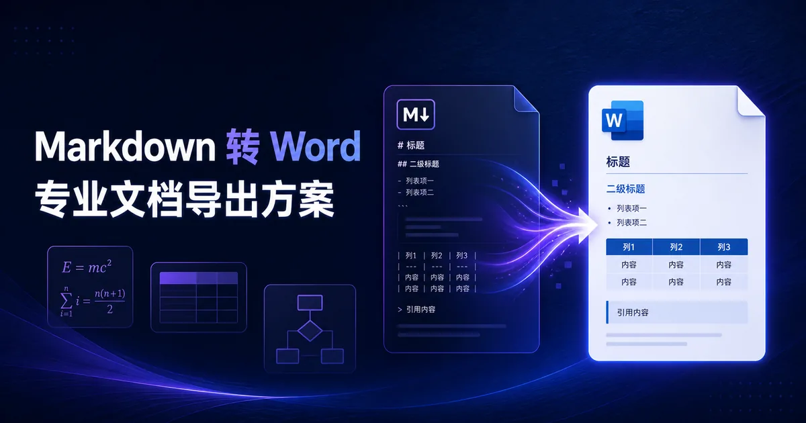

从 Word、PDF 到复杂表格、公式和流程图，这里提供真实的转换方法、兼容性测试与模板。需要高保真导出时，由 在线转换服务 完成最后一步。
面向开发者、学生、研究人员与使用 AI 写作的人

不同文档中的公式、表格、图片和图表，对导出能力的要求截然不同。
理解标题、列表、表格和图片如何进入 Word，避免复制粘贴后的格式问题。
针对 LaTeX 公式、Mermaid 图表、AI 长文和代码块，选择可靠的导出路径。
从技术方案到实验报告，直接从结构化 Markdown 开始，后续导出更稳定。
每一篇内容都对应一个实际导出问题，并连接到完整的转换能力。
将 AI 回复中常见的标题、列表、代码块和表格整理为可编辑文档。
了解可编辑公式、公式图片与兼容性之间的差异，避免论文返工。
用标准 Markdown 表格写法与合理的列宽规划，提高导出成功率。
从源码、渲染图到可交付文档，选择适合汇报和归档的方案。
在线转换服务 提供图片、表格、公式、图表与批量处理等完整转换能力。